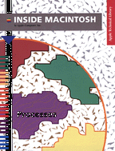

Inside Macintosh: Processes
Inside Macintosh: Processes describes the parts of the Macintosh Operating System that allow you to manage processes and tasks. If your application needs to get information about other open applications or to execute tasks at interrupt time, you should read this book.Inside Macintosh: Processes shows in detail how your application can manage processes and tasks. It also provides a complete technical reference for the Process Manager, the Notification Manager, the Time Manager, the Deferred Task Manager, and other task-related services provided by the system software. With this book, you'll learn how to
To use this book, you need to be familiar with the general structure of a Macintosh application and with basic memory-management techniques.
- get information about processes
- launch applications and desk accessories
- execute a task after a certain amount of time has elapsed
- execute a task repetitively
- notify the user while your application is in the background
- execute a task between screen refreshes
- execute a routine as part of the shutdown or restart process
- perform other advanced process-related operations
Additional aspects of the Macintosh Operating System are discussed in Inside Macintosh: Files, Inside Macintosh: Memory, Inside Macintosh: Operating System Utilities, and Inside Macintosh: Devices.
Inside Macintosh is a collection of books, organized by topic, that describe the system software of Macintosh computers. Together, these books provide the essential reference for programmers, designers, and engineers. A graphic overview of Inside Macintosh appears on the inside back cover of this book.
Availability
Click below to obtain Inside Macintosh: Processes in any of the following formats.

Book Contents
- Figures and Listings
- Preface - About This Book
- Chapter 1 - Introduction to Processes and Tasks
- Chapter 2 - Process Manager
- Chapter 3 - Time Manager
- Chapter 4 - Vertical Retrace Manager
- Chapter 5 - Notification Manager
- Chapter 6 - Deferred Task Manager
- Chapter 7 - Segment Manager
- Chapter 8 - Shutdown Manager
- Glossary